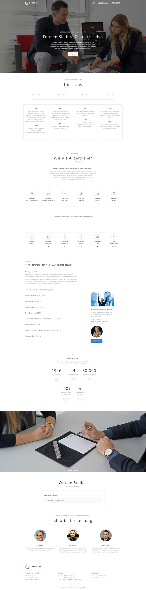
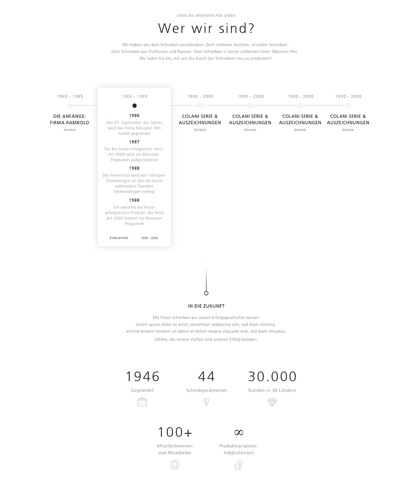

Für den Emmendinger Hersteller von Premiumschreibgeräten, der Messmer Pen GmbH, wurde eine moderne, ansprechende und suchmaschinenoptimierte Karriereseite angefertigt. Zu Beginn wurden Anforderungen, Vorstellungen & Wünsche zusammengetragen. Diese wurden anschließend in einem iterativen Designprozess berücksichtigt und über mehrere Feedbackrunden in ständiger Kommunikation mit dem Kunden in ein Screendesign der Startseite umgesetzt. Als OnePager gedacht, fanden alle Inhalte und offenen Stellen auf einer einzelnen Seite Platz, geführt von einem roten Faden durch die einzelnen Sektionen.
Die Gestaltung, in Form von Farbe, Fläche, Ikonografie und Schrift richtete sich nach dem Styleguide der Marke Messmer Pen und führte, wo zulässig, neue Elemente hinzu, um ein stimmiges und minimalistisches Ersheinungsbild zu erschaffen, welches den Fokus auf die Inhalte legt. Großflächige Bilder, klare typografische Hierarchie und einheitliche Icons sorgen für ein hochwertiges Erscheinungsbild. Ganz im Sinne der Markenphilosophie.
Basierend auf dem beliebten Content Management System WordPress, sind Inhalte wie Medien und Stellenanzeigen der neuen Karriereseite für Mitarbeiter leicht zu bearbeiten. Automatische Bildminifizierung und Performance steigernde Cachingsmaßnahmen halten Ladezeiten automatisch niedrig. Statistiken informieren über Aufrufszahlen und über Besucher, welche über andere Karriereportale kommen.
Suchmaschinenoptimierung wurde mit dem Ziel betrieben, die neue Karriereseite mitsamt neuer Domain so schnell wie möglich auf die erste Seite, bzw. neben die Hauptseite messmer-pen.com zu positionieren. Dafür wurden technische wie inhaltliche Anforderungen beliebter Suchmaschinen weitestgehend erfüllt und das Ranking fortwährend mit Tools von Google und Drittanbietern analysiert.
Innerhalb weniger Monate nach Liveschaltung erreichte das Karriereportal die Plätze 1 bis 4 für die wichtigsten Stichwortgruppen auf Google Search & Microsoft Bing. Ein herausragendes Ergebnis, übertrifft die junge Seite doch schon das Ranking der Karriereseite eines bekannten deutschen Teeherstellers mit fast identischer Markenbezeichnung. Um das Ranking weiter auf einem hohen Niveau zu halten, werden auch in Zukunft erweiterte Maßnahmen und Verbesserungen hinzukommen.
Entwicklung des Ranking für die folgenden Stichwortpaare:Im Zeitraum zwischen Ende Juni 2017 und Ende September 2017. Niedriger ist besser.
- "messmer karriere" - Google Platz 17 🡕 3 & Bing Platz 2 🡒 2
- "messmer karriere emmendingen" - Google Platz 5 🡕 1 & Bing Platz 1 🡒 1
- "messmer pen karriere" - Google Platz 11 🡕 3 & Bing Platz 1 🡒 1
- "messmer karriere" - Google Platz 12 🡕 3 & Bing Platz 3 🡕 2
Besuchen Sie messmer-karriere.de